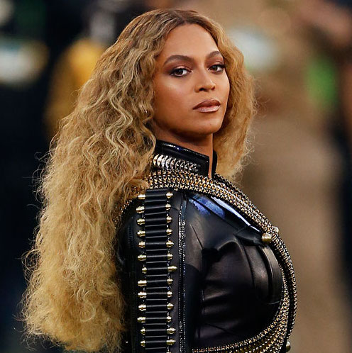

Just as the world was recovering from the shock of the untimely death of Prince, Beyoncé released Lemonade, her sixth studio album and her second “visual album”. Unlike its predecessor, which featured individual music videos for each track, a single one-hour film was aired on HBO to coincide with the release.
Lemonade is a much darker album than her previous 2013 visual offering – Beyoncé appears furious at her husband Jay-Z for much of it – although there is the possibility that this is purely a clever marketing hook. The album has a more varied structure in terms of genre, encompassing R&B, rock, country, pop and blues.

Since its release there has been an almost non-stop stream of commentary analysing every aspect of both the film and music, from its cinematic structure, to its significance for black feminism. It has received acclaim from the world’s most influential critics and has even prompted listening parties, broadcast most notably on the UK’s BBC Radio 1. Such a response may seem normal considering Beyoncé’s lofty position in the music industry, but the album has reached beyond pop culture for more reasons than this. There are several other elements that may explain the intense interest in this work.
The first is concerned with race, feminism and identity. Since she appeared on stage in 2013 with a backdrop branded with the word “feminist”, Beyoncé has been associated with popularising the feminist movement, albeit wrapped in a shiny celebrity package. This was empowerment lite – a feminism that was non-threatening, but important and no doubt inspired young women to embrace and reclaim the word for themselves. Lemonade goes much, much further. The album is overtly political and in many ways designed to directly represent and speak to the black female listener. This was signalled with the release of the single Formation in which Beyoncé embraces her racial identity by singing:
Lemonade continues and deepens this embrace of her blackness. The representation of the “angry woman” on Lemonade is arresting. Society and culture teach women that they are not supposed to express rage. They must suppress it, bite their tongues or cloak it in self-deprecating humour. Beyoncé’s performance of the fury of betrayal is unusual and needed. “Jealous or crazy,” Beyoncé sings over and over again on Hold Up, blurring the words before deciding: More like being walked all over lately, walked all over lately I’d rather be crazy.
This is powerful simply because it is something rarely expressed by someone in such a prominent position in the music industry and popular culture more widely. It is connecting with people because it matters. Women who express their anger are often reduced to “losing control” or labelled as “shrill” or “crazy”. Beyoncé’s rage is righteous and loud. This is a new phase for Beyoncé, which may or may not be a contrived marketing tool, but it almost doesn’t matter because she is no longer representative of bland, generic pop. These are ideas that matter.
Aside from the content of Lemonade, the way in which Beyoncé released her album demonstrates how she continues to break music industry rules. On December 13 2013, she released Beyoncé, a full album, complete with videos for all 14 songs, without any promotion or any prior announcement. Social media would provide all the required publicity.
Beyoncé sold more than 600,000 copies in a matter of days, breaking all iTunes sales records, and ushered in a new era of the “surprise release” from artists with similar levels of success. Following suit, artists such as Lamar, Drake, and Rihanna have since released albums without warning.
Lemonade didn’t have the same benefit of surprise, at least not entirely. Fans were aware that something would be released, given the HBO special, announced a week prior to broadcast. But the album also breaks industry rules in subtler ways.
Beyoncé released it on Tidal, the music streaming site owned by her husband Jay-Z. The album was only a Tidal exclusive for 24 hours but Beyoncé is still making sure that music fans, or anybody wanting to be part of the cultural conversation, pay for it, by making it the only platform on which it is available for streaming in its entirety.
The film also proved to be a game-changer in a different way. Forgoing MTV and YouTube, Beyoncé released it on HBO, the cable network that, for decades, has given its Saturday night over to Hollywood blockbusters. The move says that this album has worth and artistic value that can be measured monetarily.
In a week when the death of Prince shocked popular culture in myriad ways, the release of Lemonade reminded audiences that in order to remain relevant, being the exception is the rule. In recent years, Beyoncé has performed Prince-like moves, connecting with her fans only through music and images, creating an enigma which in a social media dominated culture makes her all the more compelling, despite public awareness that this is all part of an intensely personal brand.
There is little doubt that Beyoncé’s recent work is seismic in terms of its representations of black racial identity and feminism. Here is one of, if not the, highest paid female performers in the world grappling with issues of misogyny, sexuality, infidelity, black feminism and self affirmation in ways that have never been seen in the mainstream music industry.
For all of this, it is right that she is discussed and celebrated. Beyoncé has opened a discourse that explores the place of famous women as agents of both political and monetary prowess. That in itself is worthy of respect.